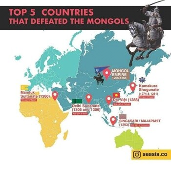
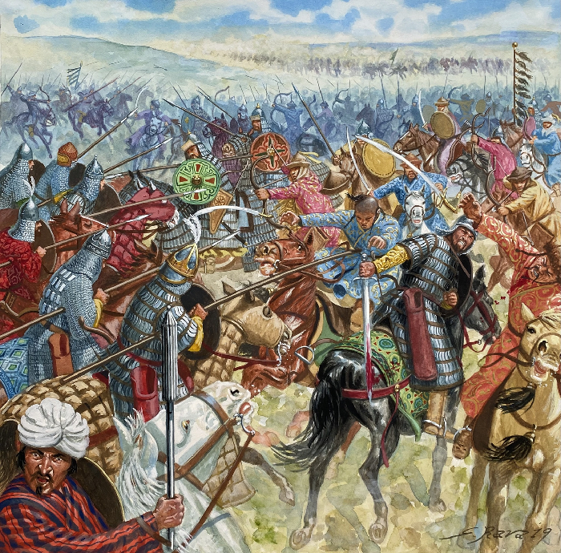
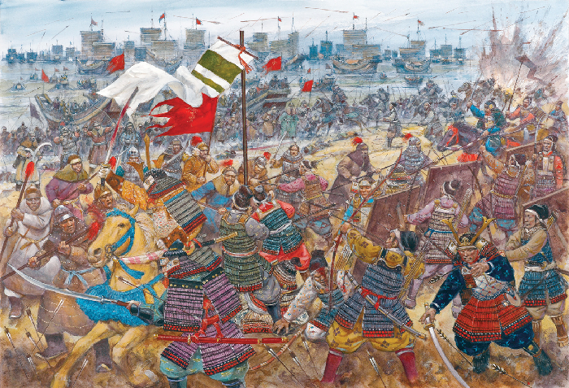
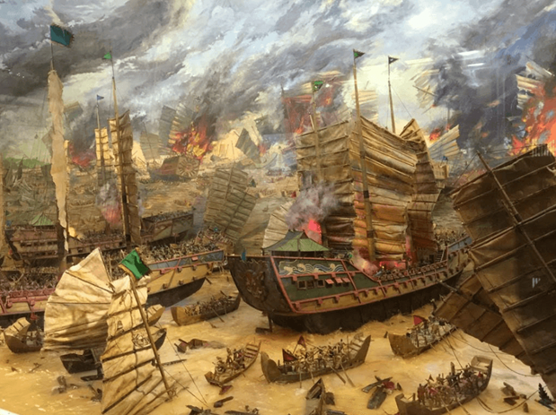
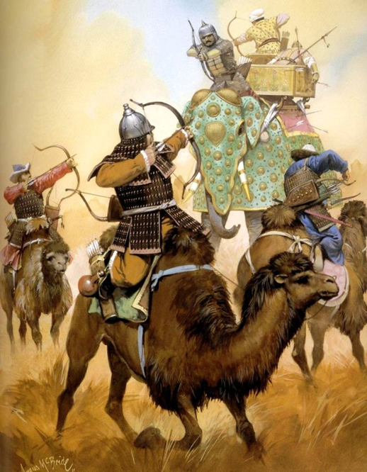
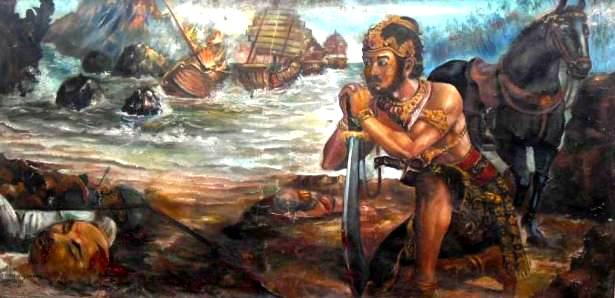

(전성기 기준임)

1. 이집트 (맘루크 술탄국)
맘루크는 대규모 야전에서 몽골군을 처음으로 격파해 몽골 진출을 막은 것으로 가장 유명함.
1260년 아인 잘루트 전투(현 이스라엘 위치)는 몽골의 전진이 영구적으로 저지된 최초의 사례인데, 쿠투즈와 바이바르스가 이끄는 맘루크군은 몽골군이 자주 사용하던 기병 '위장 퇴각' 전술을 역으로 이용하여 유인한 뒤 매복 공격으로 전멸시켰음. 이후 1303년 마르즈 알-사파르 전투는 시리아에 대한 몽골의 침입을 완전히 종식시킨 결정적인 승리였음.

2. 일본 (가마쿠라 막부)
쿠빌라이 칸이 주도한 두 차례의 대규모 침공을 성공적으로 막아냈는데, 폭풍으로 털린게 유명함.
1274년 및 1281년 침공에서 사무라이들이 해안에서 격렬하게 싸웠는데, 결과적으로는 두 차례 모두 대규모 태풍이 몽골 함대를 파괴시켰고 일본인들은 이 폭풍을 신풍, 즉 가미카제라고 불렀음. 첫 번째 침공 실패 후, 일본은 하카타만에 거대한 석조 방벽을 쌓았는데, 이 벽 때문에 몽골군은 두 번째 침공 때 상륙 지점을 찾지 못하고 바다 위에서 정체하다가 태풍을 맞이하게 되었음.

3. 베트남 (대월)
대월(베트남 북부)의 쩐 왕조는 원나라 군대를 세 차례(1258, 1285, 1287~88년)나 물리쳤음
베트남군은 우수한 몽골 기병과의 정면충돌을 피하고, 청야 전술을 사용하며 몽골군이 더위와 질병으로 고생하는 정글로 게릴라전 유인했음. 1288년 박당강 전투에서 쩐흥다오 장군은 강바닥에 철촉을 박은 나무 말뚝을 설치했는데, 조수 간만의 차로 물이 빠지자 몽골 함선들은 말뚝에 걸려 꼼짝 못 하게 되었고, 결국 화공 등으로 공격해 전멸했음.

4. 인도 (델리 술탄국)
인도 대륙은 1221년에서 1327년 사이에 6차례에 걸친 시도에도 불구하고 몽골이 결코 정복하지 못한 몇 안 되는 지역 중 하나였음.
술탄 알라우딘 할지는 몽골의 침략을 막기 위해 군대와 경제를 개혁하여 대규모 상비군을 유지했는데, 게릴라전을 펼친 다른 나라들과 달리, 델리 술탄국은 대규모 코끼리 부대와 요새화된 전방 기지들을 활용해 야전에서 정면으로 맞서 싸웠고 1299년 킬리 전투와 1306년 암로하 전투 등에서 차가타이 칸국에게 승리함.

5. 인도네시아 (싱하사리/마자파힛 왕국)
1293년, 쿠빌라이 칸은 자바의 왕 케르타네가라를 벌하기 위해 함대를 보냈음.
현지 왕자였던 라덴 위자야는 처음에는 몽골군과 동맹을 맺고 적들을 물리쳤음. 하지만 적들이 사라지자마자 몽골군을 기습 공격했고, 당황한 몽골군은 함선으로 도망쳐 인도네시아를 영구히 떠났음. 이후 마자파힛 제국을 건국했음.
중국은 원래 개병신들이고
너 조선족이냐?